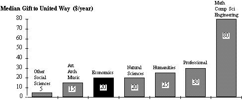
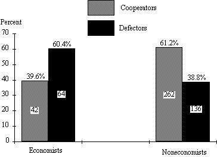

Does Studying Economics Inhibit Cooperation?
by Robert H. Frank, Thomas Gilovich, and Dennis T. Regan
In an essay written in 1879, Francis Amasa Walker tried to explain “why economists tend to be in bad odor amongst real people.” Walker, who went on to become the first president of the American Economic Association, argued that it was partly because economists disregard “…the customs and beliefs that tie individuals to their occupations and locations and lead them to act in ways contrary to the predictions of economic theory.”
More than a century later, the general public continues to regard economists with suspicion. This attitude stems in part from an apparent misunderstanding of economists' positions on important public policy issues. For example, economists commonly advocate auctioning rights to discharge atmospheric pollutants to the highest bidders, leading critics to bemoan economists' “shocking disregard for the environment and lack of compassion for the poor.” What else, the critics ask, could enable them to support a program under which “the rich can pollute to their heart's content?” On closer examination, however, the economist's position is less hostile to the interests of the poor and the environment than it appears. Indeed, as almost every economics student now knows, the effect of auctioning pollution rights is to concentrate the burden of pollution reduction in the hands not of the poor but of those people and firms who can reduce pollution at the lowest cost. And this is an outcome that is clearly in the interests of all citizens, rich and poor alike.
Misunderstandings of this sort aside, there remains another important source of public skepticism toward economics — namely, the perception that economics encourages people to act selfishly in pursuit of their own material interests. In this paper, we examine the validity of this perception.
Economists and the Self-Interest Model
If pressed, most economists will concede that people sometimes care about more than just their own material well being. Many have concerns for the welfare of other people, for esthetics, for their duties as citizens, and so on.
Yet few economists include these broader concerns in their models of human behavior. It may well be that the unpaid volunteer who heads the local United Way Campaign is driven purely by his concern for the disadvantaged; but economists feel on much firmer ground if they can identify some more narrowly self-interested motive for his action. And on inspection, there is at least some evidence in support of their cynicism. When we examine the membership rolls of volunteer organizations, we find that insurance brokers, real estate agents, car dealers, chiropractors, and others with something to sell tend to be disproportionately represented. Such organizations have less than their share of truck drivers and postal employees.
The self-interest model has well established explanatory power. Whatever role love may play in the sustenance of marriage relationships, we know that divorce rates are higher in states that provide liberal welfare benefits. When energy prices rise, people are more likely to form car pools and to insulate their houses. When the opportunity cost of time rises, people have fewer children. And so on. From the economist's perspective, motives other than self-interest may matter, but they are peripheral to the main thrust of human endeavor, and we indulge them at our peril. In Gordon Tullock's words, “the average human being is about 95 percent selfish in the narrow sense of the term.”
From its base in economics, the self-interest model has made strong inroads into a variety of other disciplines. Psychologists, political scientists, sociologists, philosophers, game theorists, biologists, and others rely increasingly on this model to explain and predict human behavior.
The basic question we investigate in this paper is whether exposure to the self-interest model alters the extent to which people behave in self-interested ways. The paper is organized into two parts. In the first, we report the results of a series of empirical studies — some our own, some by other investigators — that support the hypothesis that economists behave in more self-interested ways. By itself, this evidence does not demonstrate that exposure to the self-interest model is the cause of more self-interested behavior, although, as we will see, a case can be made for this proposition on a priori grounds. An alternative interpretation is that economists may simply have been more self-interested to begin with, and this difference was one reason they chose to study economics. In the second part of the paper, we present preliminary evidence that exposure to the self-interest model does in fact increase self-interested behavior.
I. Do Economists Behave Differently?
A. The Free-Rider Experiments
One of the clearest predictions of the self-interest model is that people will tend to free-ride on the efforts of others when it comes to the provision of public or collective goods. Even people who would strongly benefit from having, say, higher program quality on public TV have little incentive to contribute. After all, any single individual's contribution is far too small to alter the likelihood of achieving the desired outcome.
A study by Gerald Marwell and Ruth Ames found that students of economics are indeed much more likely to free-ride in experiments that called for private contributions to public goods. Their basic experiment involved a group of subjects who were given an initial endowment of money, which they were to allocate between two accounts, one “public,” the other “private.” Money deposited in a subject's private account was returned dollar for dollar to the subject at the end of the experiment. Money deposited in the public account was first pooled, then multiplied by some factor greater than one, and then distributed equally among all subjects.
Under these circumstances, the socially optimal behavior is for each subject to put her entire endowment in the public account. But the individually most advantageous strategy is to put all of it in the private account. The self-interest model predicts that all subjects will follow the latter strategy. Most don't. Across eleven replications of the experiment, the average contribution to the public account was approximately 49 percent.
It was only in a twelfth replication with first-year graduate students in economics as subjects that Marwell and Ames obtained results more nearly consistent with the self-interest model. These subjects contributed an average of only 20 percent of their initial endowments to the public account, a figure significantly less than the corresponding figure for noneconomists (p<.05).
On completion of each replication of the experiment, Marwell and Ames asked their subjects two followup questions:
- What is a “fair” investment in the public good?
- Are you concerned about “fairness” in making your investment decision?
In response to the first question, 75 percent of the noneconomists answered “half or more” of the endowment, and 25 percent answered “all.” In response to question 2, almost all noneconomists answered “yes.” The corresponding responses of the economics graduate students were much more difficult to summarize. As Marwell and Ames wrote,
… More than one-third of the economists either refused to answer the question regarding what is fair, or gave very complex, uncodable responses. It seems that the meaning of ‘fairness’ in this context was somewhat alien for this group. Those who did respond were much more likely to say that little or no contribution was ‘fair.’ In addition, the economics graduate students were about half as likely as other subjects to indicate that they were ‘concerned with fairness’ in making their decisions.
The Marwell and Ames study can be criticized on the grounds that their noneconomist control groups consisted of high school students and college undergraduates, who differ in a variety of ways from first-year graduate students in any discipline. Perhaps the most obvious difference is age. As we will see, however, criticism based on the age difference is blunted by our own evidence that older students generally give greater weight to social concerns like the ones that arise in free-rider experiments. It remains possible, however, that more mature students might have had a more sophisticated understanding of the nuances and ambiguities inherent in concepts like fairness, and for that reason gave less easily coded responses to the followup questions.
Yet another concern with the Marwell and Ames experiments is not easily dismissed. Although the authors do not report the sex composition of their group of economics graduate students, such groups are almost always preponderantly male. The authors' control groups of high school and undergraduate students, by contrast, consisted equally of males and females. As our own evidence will later show, there is a sharp tendency for males to behave less cooperatively in experiments of this sort. So while the Marwell and Ames findings are suggestive, they do not clearly establish that economists behave differently.
B. Economists and the Ultimatum Bargaining Game
The other major study of whether economists behave differently from members of other disciplines is by John Carter and Michael Irons (1991). These authors measured the self-interestedness of economists by examining their behavior in the ultimatum bargaining game. This is a simple game with two players, an “allocator” and a “receiver.” The allocator is given a sum of money (in these experiments, $10), and must then propose how to divide this sum between herself and the receiver. Suppose, for example, the allocator proposes $X for herself, the remaining $(10-X) for the receiver. Once the allocator makes this proposal, the receiver has two choices: (1) he may accept, in which case each player gets the amount proposed by the allocator; or (2) he may refuse, in which case each player gets zero. The game is played only once by the same partners.
If both players behave according to the self-interest model, the model makes an unequivocal prediction about how the game will proceed. Assuming the money cannot be divided into units smaller than one cent, the allocator will propose $9.99 for herself and the remaining $0.01 for the receiver, and the receiver will accept on the grounds that a penny is better than nothing. Since the game will not be repeated, there is no point in the receiver turning down a low offer in the hope of generating a better offer in the future.
Other researchers have shown that the strategy predicted by the self-interest model is almost never followed in practice: 50-50 splits are the most common outcome, and most one-sided offers are rejected out of concerns about fairness.
The research strategy employed by Carter and Irons was to compare the performance of economics majors and other students and see which group came closer to the predictions of the self-interest model. In a sample of 43 economics majors, the average minimum amount acceptable by the receiver was $1.70, as compared with an average of $2.44 for a sample of 49 noneconomics majors (p<.05). As receivers then, economics majors came significantly closer than nonmajors to the behavior predicted by the self-interest model.
In the allocator's role as well, economics majors performed more in accordance with the predictions of the self-interest model than did nonmajors. Economics proposed to keep an average of $6.15 for themselves, as compared to an average of only $5.44 for the sample of 49 nonmajors (p<.01).
Kahneman, Knetsch, and Thaler (1986) report findings similar to those of Carter and Irons: commerce students (the term used to describe business students in Canadian universities) were more likely than psychology students to make one-sided offers in ultimatum bargaining games.
One difficulty with the Carter and Irons results is that the way they assigned the allocator and receiver roles leaves open possible differences in the interpretation of what behavior is required in the name of fairness. In particular, allocators earned their role by having achieved higher scores on a preliminary word game. Allocators might thus reason that they were entitled to a greater share of the surplus on the strength of their earlier performance. The observed differences in the behavior of economics majors and nonmajors might therefore be ascribed to a differential tendency to attach significance to the earlier performance differences. The training received by economics students in the marginal productivity theory of wages lends at least surface plausibility to this interpretation.
To summarize the existing literature, both the Marwell and Ames and Carter and Irons papers provide evidence consistent with the hypothesis that economists tend to behave less cooperatively than noneconomists. But because of the specific experimental design problems mentioned, neither study is conclusive. In the following sections we describe our own attempts to test the hypothesis that economists behave less cooperatively.
C. Survey Data on Charitable Giving
The central role of the free-rider hypothesis in modern economic theory suggests that economists might be less likely than others to make gifts to private charities. To explore this possibility, we mailed questionnaires to 1245 college professors randomly chosen from the professional directories of 23 disciplines, asking them to report the annual dollar amounts they gave to a variety of private charities. We received 576 responses with sufficient detail for inclusion in our study. Respondents were grouped into the following disciplines: economics (N 75); other social sciences (N 106); math, computer science, and engineering (N 48); natural sciences (N 98); humanities (N 94); architecture, art, and music (N 68); and professional (N 87). Members of every discipline, even economics, fell far short of the prediction of the strong version of the free-rider hypothesis. But the proportion of pure free riders among economists (that is, those who reported giving no money to any charity) was more than double that of any of the other six areas included in the survey. (See Figure 1.)
Figure 1. Proportion of Pure Free Riders in Seven Disciplines.
Although we do not have data on the gender of each survey respondent, gender differences by discipline do not appear to account for the pattern of free-ridership shown in Figure 1. For example, the natural sciences, which are also preponderantly male, had only one-third as many free riders as did economics.
Despite their generally higher incomes, economists were also among the least generous in terms of their median gifts to large charities like viewer-supported television and the United Way, which are shown in Figures 2 and 3, respectively.
Figure 2. Median Gift to Public Television.

Figure 3. Median Gift to the United Way.
In fairness to the self-interest model, we should note that there may be self-interested reasons for contributing even in the case of charities like the United Way and public television. United Way campaigns, for example, are usually organized in the workplace and there is often considerable social pressure to contribute. Public television fund drives often make on-the-air announcements of donors' names and economists stand to benefit just as much as the members of any other discipline from being hailed as community-minded citizens. In the case of smaller, more personal charitable organizations, there are often even more compelling self-interested reasons for giving. After all, failure to contribute in accordance with one's financial ability may mean outright exclusion from the substantial private benefits associated with membership in religious groups, fraternal organizations, and the like.
An examination of economists' gifts to other charities revealed that their median annual gift is actually slightly larger, in absolute terms, than the median for all disciplines taken as a whole. But because economists have significantly higher salaries than do the members of most other disciplines, these data, like the data shown in Figures 2 and 3, tend to overstate the relative generosity of economists. Unfortunately, we do not have direct income measures for the respondents in our survey, but we do have the number of years each respondent has been a practitioner in his or her discipline. In an attempt to take income effects into account, we estimated earnings functions (salary vs. years of experience) for each discipline using data from a large private university. We then applied the estimated coefficients from these earnings functions to the experience data from our survey to impute an income estimate for each respondent in our survey. Finally, we used these imputed income figures, together with our respondents' reports of their total charitable giving to estimate the relationship between income and total giving shown in Figure 4. In the latter exercise, all economists were dropped from the sample on the grounds that our object was to see whether the giving pattern of economists deviates from the pattern we see for other disciplines.
Thus, for example, in Figure 4 we see that a noneconomist with an annual income of $44,000 (roughly, the median imputed income for architects in our sample) is expected to give almost $900 per year to charity, while a noneconomist with an income of $62,000 (roughly the median imputed income for economists in our sample) is expected to give more than $1400 per year.
Figure 4. Charitable Giving vs. Imputed Income.
Using the relationship between charitable giving and income, we calculated the expected gift for each respondent as a function of his or her imputed income. We then calculated our measure of a discipline's generosity as the ratio of the average value of gifts actually reported by members of the discipline to the average value of gifts expected on the basis of the members' imputed incomes. A discipline is thus more generous than expected if this ratio exceeds 1.0, and less generous if it is less than 1.0. The computed ratio for economists was 0.91, which means that economists in our sample gave 91 percent as much as they would have been expected to give on the basis of their imputed incomes. The performance of economists by this measure is compared with the performance of other disciplines in Figure 5.
Figure 5. The Ratio of Average Gift to Gift Expected on the
Basis of Income.
On a number of other dimensions covered in our survey, the behavior of economists was little different from the behavior of members of other disciplines. For example, economists were only marginally less likely than members of other disciplines to report that they would take costly administrative action to prosecute a student suspected of cheating. Economists were actually slightly above average for the entire sample in terms of the numbers of hours they reportedly spend in “volunteer activities.” In terms of their reported frequency of voting in presidential elections, economists were only slightly below the sample average.
D. Economists and the Prisoner's Dilemma
In this section we report our results from a large experimental study of how economics majors and nonmajors perform in the prisoner's dilemma game.
Table 1 shows the monetary payoffs in dollars to two players, X and Y, in a standard prisoner's dilemma. In Table 1, as in all prisoner's dilemmas, each player gets a higher payoff when each cooperates than when each defects. But when one player's strategy is fixed, the other player always gets a higher payoff by defecting than by cooperating; and hence the dilemma. By following individual self-interest, each player does worse than if each had cooperated.
Table 1. Monetary Payoffs for a Prisoner's Dilemma Game.
One of the most celebrated and controversial predictions of the self-interest model is that people will always defect in one-shot prisoner's dilemmas. The game thus provides an opportunity to examine the extent to which various groups exhibit self-interested behavior. Accordingly, we conducted a large one-shot prisoner's dilemma experiment involving both economics majors and nonmajors. Many of our subjects were students recruited from courses in which the prisoner's dilemma is an item on the syllabus. Others were given a detailed briefing about the game.
Our subjects met in groups of three and each was told that he would play the game once with each of the other two subjects. The payoff matrix, shown in Table 1, was the same for each play of the game. Subjects were told that the games would be played for real money, and that none of the players would learn how their partners had responded in each play of the game. (More below on how confidentiality was maintained.)
Following a period in which subjects were given an opportunity to get to know one another, each subject was taken to a separate room and asked to fill out a form indicating his response (cooperate or defect) to each of the other two players in his group. After the subjects had filled out their forms, the results were tallied and the payments disbursed. Each subject received a single payment that was the sum of three separate amounts: (1) the payoff from the game with the first partner; (2) the payoff from the game with the second partner; and (3) a term that was drawn at random from a large list of positive and negative values. None of these three elements could be observed separately, only their sum.
The purpose of the random term was to make it impossible for a subject to infer from her total payment how any of the other subjects had played. It prevented both the possibility of inferring individual choices and also of inferring even group patterns of choice. Thus, unlike earlier prisoner's dilemma experiments, ours did not enable the subject to infer what happened even when each (or neither) of her partners defected.
In one version of the experiment (the “unlimited” version), subjects were told that they could make promises not to defect, but they were also told that the anonymity of their responses would render such promises unenforceable. In two other versions of the experiment (the “intermediate” and “limited” versions), subjects were not permitted to make promises about their strategies. The latter two versions differed from one another in terms of the length of pre-game interaction, with up to 30 minutes permitted for the intermediate groups and no more than ten minutes for the limited groups. All groups were given an extensive briefing on the prisoner's dilemma at the start of the experiment and each subject was required to complete a questionnaire at the end to verify that he or she had indeed understood the consequences of different combinations of choices.
Results for the Sample as a Whole
For the sample as a whole there were a total of 267 games, which means a total of 534 choices between cooperation and defection. The choices for economics majors and nonmajors are shown in Figure 6, where we see that the defection rate for economics majors was 60.4 percent, as compared to only 38.8 percent for nonmajors.

Figure 6. Defection and Cooperation Rates for the Sample as a
Whole.
Needless to say, this pattern of differences is strongly supportive of the hypothesis that economics majors are more likely than nonmajors to behave self-interestedly (p<.005).
Adding Control Variables
Earlier we noted that one possible explanation for the observed differences between economics students and others is that economics students are more likely than others to be male. To control for the possible influences of sex, age, and experimental condition, we performed the ordinary least squares regression reported in Table 2. Because each subject played the game twice, the individual responses are not statistically independent. To get around this problem, we limited our sample to the 207 subjects who either cooperated with, or defected on, each of their two partners. The 60 subjects who cooperated with one partner and defected on the other were deleted from the sample. The dependent variable is the subject's choice of strategy, coded as 0 for “cooperate” and 1 for “defect.” The independent variables are “econ” which takes the value 1 for economics majors, 0 for all others; “unlimited,” which is 1 for subjects in the unlimited version of the experiment, 0 for all others; “intermediate,” which is 1 for subjects in the intermediate version, 0 for all others; “limited,” which is the reference category; “sex,” coded as 1 for males, 0 for females; and “class,” coded as 1 for freshmen, 2 for sophomores, 3 for juniors, and 4 for seniors.
Dependent variable:own response
R2 22.2% R2(adjusted) 20.3%
s 0.4402 with 207 - 6 201 degrees of freedom
SourceSum of SquaresdfMean SquareF-ratio
Regression11.142652.22911.5
Residual38.95402010.193801
VariableCoefficients.e.t-ratio
Constant0.5791270.10415.57
econ0.1688350.07802.16
unlimited0.00----
intermediate-0.0911890.0806-1.13
limited-0.3295720.0728-4.53
sex0.2399440.06423.74
class-0.0653630.0303-2.16
Table 2. Whole Sample Regression.
Consistent with a variety of other findings on sex differences in cooperation, we estimate that, other factors the same, the probability of a male defecting is almost 0.24 higher than the corresponding probability for a female. Even after controlling for the influence of gender, we see that the probability of an economics major defecting is almost 0.17 higher than the corresponding probability for a nonmajor.
The coefficients for the unlimited and intermediate experimental categories represent effects relative to the defection rate for the limited category. As expected, the defection rate is smaller in the intermediate category (where subjects have more time to interact than in the limited category), and falls sharply further in the unlimited category (where subjects are permitted to make promises to cooperate). With subjects' permission, we tape recorded the conversations of several of the unlimited groups, and invariably each person promised each of his partners he would cooperate. (There would be little point, after all, in promising to defect.)
Note, finally, that the overall defection rate declines significantly as students progress through school. The class coefficient is interpreted to mean that with the passage of each year the probability of defection declines, on the average, by almost 0.07. This pattern will prove important when we take up the question of whether training in economics is the cause of higher defection rates for economics majors.
The Unlimited Subsample
Focusing on subjects in the unlimited subsample, we see in Figure 7 that the difference between economics majors and nonmajors virtually disappears once subjects are permitted to make promises to cooperate. For this subsample, the defection rate for economics majors is 28.6 percent, for nonmajors 25.9 percent.
Figure 7. The Unlimited Subsample (Promises Permitted).
The Intermediate and Limited Subsamples
Because the higher defection rates for economics majors are largely attributable to the no-promises conditions of the experiment, the remainder of our analysis focuses on subjects in the limited and intermediate groups. The conditions encountered by these groups are of special significance because they come closest to approximating the conditions that characterize social dilemmas encountered in practice. After all, people rarely have an opportunity to look one another in the eye and promise not to litter on deserted beaches or disconnect the smog control devices on their cars.
In Figure 8 we report the choices for the pooled limited and intermediate groups. Comparing the entries in Figure 8 with Figure 7, we see clear evidence of the higher defection rates of both economics majors and nonmajors. The defection rates of 71.8 percent and 47.3 percent for economics majors and nonmajors, respectively, differ significantly from one another at the .01 level.

Figure 8. Defection and Cooperation Rates for the No-Promises
Subsample.
Reasons for Cooperation and Defection
As part of the exit questionnaire that tested our subjects' understanding of the payoffs associated with different combinations of choices, we also asked them to state their reasons for making the choices they did. We hypothesized that economists would be more inclined to construe the objective of the game in self-interested terms, and therefore more likely to refer exclusively to features of the game itself when describing reasons for their choices. By contrast, we expected the noneconomists to be more open to alternative ways of interpreting the game, and thus more likely to look to their partners for cues about how to play. Accordingly, we expected noneconomists to refer more often to their feelings about their partners, aspects of human nature, and so on. This is precisely the pattern we found. Among the sample of economics students, 31% made exclusive reference to features of the game itself in explaining their chosen strategies, as compared with only 17% of the noneconomists. The probability of obtaining such divergent responses by chance is less than .05.
Another possible explanation for the economists' higher defection rates is that economists may be more likely than others to expect their partners to defect. The self-interest model, after all, encourages such an expectation, and we know from other experiments that most subjects defect if they are told that their partners are going to defect. To investigate the role of expectations, we asked students in an upper division public finance course in Cornell's economics department whether they would cooperate or defect in a one-shot prisoner's dilemma if they knew with certainty that their partner was going to cooperate. Most of these students were economics majors in their junior and senior years. Of the 31 students returning our questionnaires, 18 (58 percent) reported that they would defect, only 13 that they would cooperate. By contrast, just 34 percent (14 of 41) noneconomics Cornell undergraduates who were given the same questionnaire reported that they would defect on a partner they knew would cooperate (p<.05). For the same two groups of subjects, almost all respondents (30 of 31 economics students and 36 of 41 noneconomics students) said they would defect if they knew their partner would defect. From these responses, we conclude that while expectations of partner performance do indeed play a strong role in predicting behavior, defection rates would remain significantly higher for economists than for noneconomists even if both groups held identical expectations about partner performance.
II. Why Do Economists Behave Differently?
In the preceding sections we have seen evidence that economists behave less cooperatively than noneconomists along a variety of different dimensions. This difference in behavior might be exclusively the result of training in economics. Alternatively, it might exist simply because people who chose to major in economics were different initially. Or it might be some combination of these two effects. We now report evidence on whether training in economics plays a causal role.
A. Comparing Upperclassmen and Underclassmen
If economics training plays a causal role in uncooperative behavior, then we would expect defection rates in the prisoner's dilemma experiments to rise with exposure to training in economics. Again focusing on the no-promises subsample, the defection rates are broken down by major and level of education in Figure 9. As shown, the defection rate for economics majors is virtually the same for both upperclassmen (juniors and seniors) and underclassmen (freshmen and sophomores). By contrast, the defection rate for nonmajors is approximately 33 percent higher for underclassmen than for upperclassmen.
Figure 9. Defection Rates for Upper- and Underclassmen.
The pattern shown in Figure 9 continues to hold when we control for the effects of other factors that influence defection rates. As the regression equation summarized in Table 3 shows, the defection probabilities do not differ significantly between upperclass economics majors and underclass economics majors. For nonmajors, defection probabilities are sharply lower than for majors in each category, and fall by more than 0.16 with the transition to upperclass status.
Dependent variable:own response
R2 16.4%% R2(adjusted) 12.8%
s 0.4673 with 124 - 6 118 degrees of freedom
SourceSum of SquaresdfMean SquareF-ratio
Regression5.0359951.00724.61
Residual25.76241180.218325
VariableCoefficients.e.t-ratio
Constant0.6287340.1436 4.38
limited0.00----
intermediate-0.0950400.0876-1.09
sex0.2575380.08962.88
econ 1,20.00----
econ 3,4-0.0269360.1623 -0.166
nonecon 1,2-0.1510500.1426-1.06
nonecon 3,4-0.3132660.1427-2.20
Table 3. The Effect of Education Level on Defection Rates.
Thus, for students in general there is a pronounced tendency toward more cooperative behavior with movement toward graduation, a trend that is conspicuously absent for economics majors. On the basis of the available evidence, we are in no position to say whether the trend for noneconomists reflects something about the content of noneconomics courses. But regardless of the causes of this trend, the fact that it is not present for economists is consistent with the hypothesis that training in economics plays at least some causal role in the lower observed cooperation rates of economists.
B. Honesty Surveys
In a further attempt to assess whether training in economics inhibits cooperation in social dilemmas, we posed a pair of ethical dilemmas to students in two introductory microeconomics courses at Cornell University and to a control group of students in an introductory astronomy course, also at Cornell. In one dilemma, the owner of a small business is shipped ten microcomputers but is billed for only nine and the question is whether the owner will inform the computer company of the error. Subjects are first asked to estimate the chances (0 - 100%) that the owner would point out the mistake, and then, on the same response scale, to indicate how likely they would be to point out the error if they were the owner. The second dilemma concerns whether a lost envelope containing $100 and bearing the owner's name and address is likely to be returned by the person who finds it. Subjects are first asked to imagine that they have lost the envelope and to estimate the likelihood that a stranger would return it. They are then asked to assume that the roles are reversed and to indicate the chances that they would return the money to a stranger.
Students in each class completed the questionnaire on two occasions, first during the initial week of class in September, and then during the final week of class in December.
For each of the four questions, each student was coded as being “more honest” if the probability checked for that question rose between September and December; “less honest” if it fell during that period; and “no change” if it remained the same. Our hypothesis was that even a single semester of introductory microeconomics would have a measurable effect both on students' expectations of the level of self-interested behavior in society and on their own propensities to behave self-interestedly.
The first introductory microeconomics instructor (instructor A) whose students we surveyed is a mainstream economist with research interests in industrial organization and game theory. In class lectures, this instructor placed heavy emphasis on the prisoner's dilemma and related illustrations of how survival imperatives often militate against cooperation. The second microeconomics instructor (instructor B) is a specialist in economic development in Maoist China who did not emphasize such material to the same degree, but did assign a mainstream introductory text. On the basis of these differences, our expectation was that any observed effects of economics training should be stronger in instructor A's class than in instructor B's. The results for the three classes are summarized in Figures 10-12.
Introductory Microeconomics A (N 48)
Figure 10. Questionnaire Findings, Introductory Microeconomics
A.
Introductory Microeconomics B (N 115)
Figure 10. Questionnaire Findings, Introductory Microeconomics
B.
Introduction to Astronomy (N 30)
Figure 12. Questionnaire Findings: Introduction to Astronomy.
As Figures 10 and 11 indicate, a tendency toward more cynical responses was observed in instructor A's introductory economics class but not in instructor B's. In our control group of introductory astronomy students (Figure 12), there was a weak tendency toward less cynical expectations and behavior over the course of the semester.
It may seem natural to wonder whether the differences reflected in Figures 10 and 11 might stem in part from the fact that students chose their instructors rather than being randomly assigned. Perhaps the ideological reputations of the two professors were known in advance to many students, with the result that a disproportionate number of the least cynical students chose to take instructor B's course. Two observations, however, weigh heavily against this interpretation. First, the average values of the initial responses to the four questions were in fact virtually the same for both classes. And second, note that Figures 10 and 11 record not the level of cynicism but the change in that level between the beginning and end of the course. Figure 11 thus tells us that even if the students in Microeconomics A were more cynical to begin with, they became still more so during the course of the semester. This finding is consistent with the hypothesis that emphasis on the self-interest model tends to inhibit cooperation.
Discussion
There have been several previous attempts to discover whether economists behave in more self-interested ways than do noneconomists. The Marwell and Ames finding of a greater tendency to free ride on the part of economists is uncertain because their samples of economists and noneconomists were different on so many dimensions other than academic history and interests. The Carter and Irons findings on the ultimatum bargaining game were subject to an alternative interpretation based on the possibility that economics majors may have held different views on how performance in the preliminary word game affected entitlements in the ultimatum game.
We believe our prisoner's dilemma results constitute the clearest demonstration to date of a large difference in the extent to which economists and noneconomists behave self-interestedly. And our survey of charitable giving lends additional support to the hypothesis that economists are more likely than others to free ride.
But we also emphasize that both of these exercises produced evidence that economists behave in traditionally communitarian ways under at least some circumstances. For example, they reported spending as much time as others in volunteer activities, and their total gifts to charity were only slightly less than would have been expected on the basis of their incomes. Finally, in the unlimited version of our prisoner's dilemma experiments, where subjects were allowed to promise to cooperate, economists were almost as likely to cooperate as noneconomists were.
We also found evidence consistent with the view that the differences in cooperativeness are caused in part by training in economics. First, we saw that the gap in defection rates between economics majors and nonmajors tends to widen as students move toward graduation. Second, we saw that introductory microeconomics, at least if taught in a certain way, seems to affect student attitudes toward honesty.
Clearly, our evidence for the existence of a difference between the behavior of economists and noneconomists is more compelling than our evidence for the causal role of economics training in creating that difference. But there is additional indirect evidence for such a role. One of the clearest patterns to emerge in several decades of experimental research on the prisoner's dilemma is that the behavior of any given player is strongly influenced by that player's prediction about what his partner will do. In experiments involving noneconomists, people who expect their partners to cooperate usually cooperate themselves, and those who expect their partners to defect almost always defect. In our experiments, economists were 42 percent more likely than noneconomists to predict that their partners would defect. It would be remarkable indeed if none of this difference in outlook were the result of repeated exposure to a behavioral model whose unequivocal prediction is that people will defect whenever self-interest dictates.
For the sake of discussion, suppose that exposure to the self-interest model does, in fact, cause people to behave more selfishly. Should this be a cause for concern? To the extent that norms favoring cooperation help solve prisoner's dilemmas and other market failures, one cost of a rise in selfish behavior is a fall in the real value of economic output. Who bears this cost? By conventional accounts, it is those who continue to behave cooperatively, a troubling outcome on equity grounds. Several researchers have recently suggested, however, that the ultimate victims of noncooperative behavior may be the very people who practice it. Suppose, for example, that some people always cooperate in one-shot prisoner's dilemmas while others always follow the seemingly dominant strategy of defecting. If people are free to interact with others of their own choosing, and if there are cues that distinguish cooperators from defectors, then cooperators will interact selectively with one another and earn higher payoffs than defectors. Elsewhere we have shown that even on the basis of brief encounters involving strangers, experimental subjects are adept at predicting who will cooperate and who will defect in prisoner's dilemma games. If people are even better at predicting the behavior of people they know well, it seems that the direct pursuit of material self-interest may indeed often be self-defeating.
These observations do not challenge the obvious importance of self-interest as a human motive. But they do suggest the need for a richer model of 20human behavior, one that explicitly recognizes that people who hold cooperative motives often come out ahead.
References
Akerlof, George. “Loyalty Filters,” The American Economic Review, 73, March, 1983: 54-63.
Carter, John and Michael Irons. “Are Economists Different, and If So, Why?” Journal of Economic Perspectives, 5, Spring, 1991.
Carter, John and Michael Irons. “Are Economists Different, and If So, Why?” (longer, unpublished version of the paper above), College of the Holy Cross, Dec., 1990.
Dawes, Robyn. “Social Dilemmas,” Annual Review of Psychology, 31, 1980: 163-93.
Etzioni, Amitai. The Moral Dimension: Toward a New Economics, NY: The Free Press, 1988.
Frank, Robert H. Passions Within Reason, NY: W. W. Norton, 1988.
Frank, Robert H., Thomas Gilovich, and Dennis T. Regan, “Can Cooperators Find One Another?” unpublished paper, 1992.
Gilligan, Carol. In a Different Voice, Cambridge, MA: Harvard University Press, 1982.
Guth, Werner, Rolf Schmittberger, and Bernd Schwarze. “An Experimental Analysis of Ultimatum Bargaining,” Journal of Economic Behavior and Organization, 3, 1982: 367-88.
Hirshleifer, Jack. “On the Emotions as Guarantors of Threats and Promises,” in John Dupre, ed., The Latest and the Best: Essays on Evolution and Optimality, Cambridge, MA: The MIT Press, 1987.
Kahneman, Daniel, Jack Knetsch, and Richard Thaler. “Fairness and the Assumptions of Economics,” Journal of Business, 59, 1986: S286-S300.
Mansbridge, Jane J. Beyond Self-Interest, Chicago: University of Chicago Press, 1990.
Marwell, Gerald and Ruth Ames. “Economists Free Ride, Does Anyone Else?” Journal of Public Economics, 15 (1981): 295-310.
Tullock, Gordon. The Vote Motive, London: Institute for Economic Affairs, 1976.
Appendix 1: Whole Sample Probit and Logit Models
Probit Model: Pr[own response 1 | X]
F(Xb), where F is the std. normal c.d.f.
Observations: 207 Cases Correct: 150
Log Likelihood: -114.96953 Avg. Likelihood: .57383787
Variable Coefficients.e. t-ratio
constant .2546171 .3195718 .7967445
unlimited -1.002759 .2312719 -4.335844
intermediate-.2769906 .2439911 -1.135249
limited 0.00------
class -.2005716 0.09523010-2.106178
sex.7184583 .1988373 3.613298
econ .4831544 .24106652.004237
Logit Model: Pr[own response 1 | X]
exp(Xb)/(1+exp(Xb))
Observations: 207 Cases Correct: 150
Log Likelihood: -114.82229 Avg. Likelihood: .57424621
Variable Coefficient s.e.t-ratio
constant .4646459 .5381353 .8634368
unlimited-1.696657 .3991972 -4.250174
intermediate-.4859651 .4060518 -1.196806
limited 0.00------
class-.3469820 .1628891 -2.130173
sex1.196511 .33479733.573837
econ .8411330.4056866 2.073357
Appendix 2: Ethics Questionnaire
This questionnaire is part of an ongoing study of attitudes toward ethical issues that arise in business and personal life. Please read each question carefully and try to imagine yourself in the situation it describes. Then check the most appropriate response category for each question.
______________________________________________________________________
Question #1.
In an effort to increase productivity, the owner of a small business has ordered ten personal computers for use by his staff. When the UPS shipment arrives, he notices that the invoice from the mail-order house bills for only nine PCs, even though all ten were included with the shipment.
The owner has two options. (1) He can inform the mail-order house of its error and ask to be billed for the correct amount; or (2) he can pay the amount shown on the invoice and take no further action.
If the owner pays the amount shown, the worst thing that can happen is that the mail-order house may later discover its error and bill him for the tenth computer. There is a high probability (0.99, say) that the error will never be discovered.
What do you believe the chances are that the owner will inform the mail-order house of its mistake and ask to be billed for the correct amount? (Check one.)

_____________________________________________________________________
Question #2.
If YOU were the owner in the situation described in Question #1, what are the chances you would inform the mail-order house of its mistake and ask to be billed for the correct amount? (Check one.)
_____________________________________________________________(Please turn over)
Question #3.
After attending a football game, you return home to discover that you have lost an envelope from your jacket pocket. The envelope contains $100 in cash and has your name and address written on the outside. A stranger has found the envelope.
What would you say the chances are that this person will return your $100 to you? (Check one.)
_____________________________________________________________________
Question #4.
If YOU found $100 in an envelope like the one described in Question #3, what are the chances that you would return the stranger's cash? (Check one.)
_____________________________________________________________________
For each of the following, please check the category that applies to you:
Sex: male_____________female____________
Class: freshman________ sophomore__________
junior___________senior_____________other _____________
_____________________________________________________________________
There will be a followup to this questionnaire in December. In order to match the followup questionnaire with this one, we need an identifying code for each of you, one that preserves your anonymity and that you will be able to recall easily in December. Past experience has taught that a code with these properties can be made from your middle name and your mother's maiden name.
Your middle name_____________________________________
Your mother's maiden name______________________________
Thank you very much for your cooperation.
_____________________________________________________________________